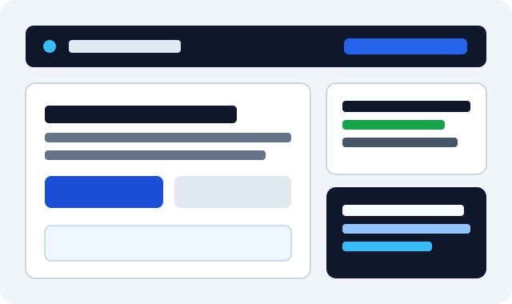

Critical CSS & Lean Rules
Above-the-fold rules render immediately while secondary rules stay grouped cleanly with custom properties and zero duplicate declarations.
Built with critical above-the-fold styling, lean CSS rules, semantic HTML5 landmarks, clear alternative text, high-contrast color tokens, and full keyboard operability.

Targeted engineering choices reduce render-blocking overhead, payload size, and layout shifts.
Above-the-fold rules render immediately while secondary rules stay grouped cleanly with custom properties and zero duplicate declarations.
Uses compact scalable vector graphics with explicit width and height attributes to keep Cumulative Layout Shift (CLS) at zero.
Relies on native OS font families so text paints instantaneously without waiting on external webfont network requests or Flash of Invisible Text (FOIT).
Designed for screen-reader clarity, high visual contrast, and unobstructed keyboard navigation.
Uses <header>, <nav>, <main>, <section>, <article>, and <footer> alongside descriptive image alt attributes and unique aria-labelledby headings.
Maintains strong text-to-background contrast (≥ 4.5:1) and high-visibility :focus-visible outlines across links and buttons.
Interactive checklist items use native <button> elements with synchronized aria-expanded and aria-controls attributes.
Select a verification topic to expand summary guidance for Lighthouse, WAVE, and Axe checks.
Verify fast First Contentful Paint (FCP), low Total Blocking Time (TBT), minimal DOM depth, zero render-blocking font downloads, and 0 CLS on both mobile and desktop profiles.
Confirm zero contrast errors, proper heading hierarchy (h1 → h2 → h3), meaningful alt text on images, working skip links, and full Tab / Enter / Space keyboard access.